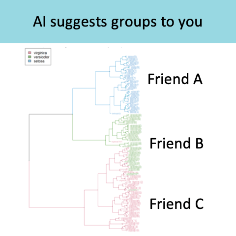
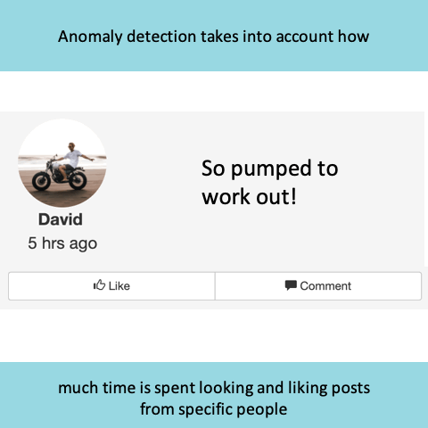
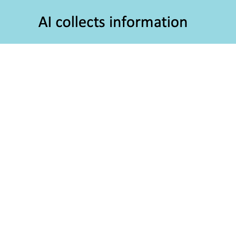
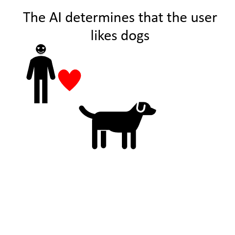
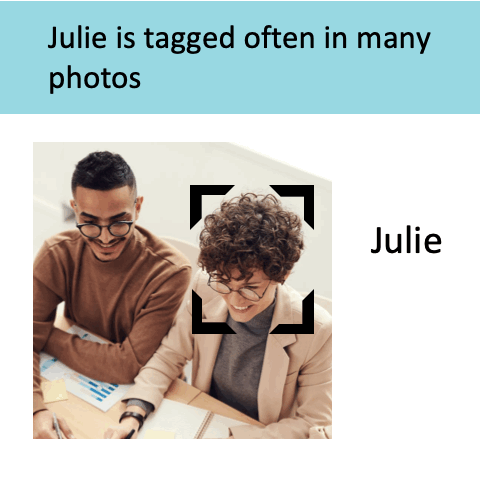
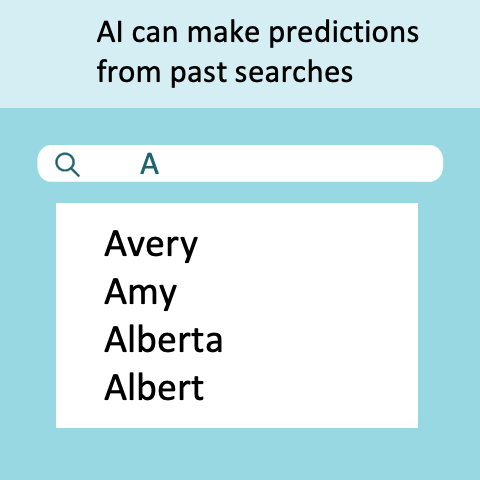
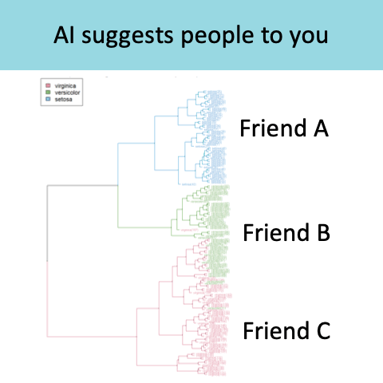
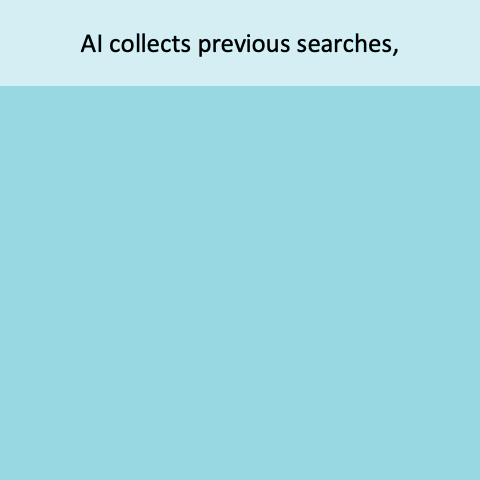

Clustering

Based on the fact that you "liked" three pictures of dogs, the system performed "clustering" - meaning the system found other people with similar interests (each of you liked pictures of dogs) and suggested things that the systemre specific to those people that you had not yet liked (two other people who liked dogs also liked cats, so the system thought you might be interested in cats).
Clustering Interests
We use clustering to figure out which groups you might be interested in by determining which groups your friends are in. The more friends you have in a group, the more likely we are to recommend it to you. When you have an equal number of friends in two groups, we use other factors such as location, interests of the group compared to your interests, etc.
Likes
We noticed that you spend a lot of time looking at pictures your friend Bob posts but not so much time looking at pictures Susan posts. The one difference is Susan's pictures of rabbits, which you look at longer than any of Bob's pictures. We figured that out using anomaly detection. Now we know to show you Susan's rabbits, then all of Bob's posts, then Susan's other posts.
AI Trackings
The system uses artificial intelligence (AI) on the entire website because it is constantly updating what it knows about you. It tracks where your mouse is, how long you stay on certain parts of the website, and which items you click on - and it makes assumptions of all these things and compares them to what you actually do. This helps it build its neural networks, which are modeled after the brain.
IP Address Tracking
The system collected information on what you watched and what you "liked" as well as what posts you've previously spent time on. It also determined where you are located based on your IP address. This information supports the deployment of targeted ads..
Collected Information
We collect information about you such as your location from your IP address, and other information that you provide us with - such as your contacts.
Suggestions using Self-Organizing Map

The AI takes into account your interests. Every time you join a group it suggests for you, it adds some information to its self-organizing map, so that it can make better suggestions in the future. (GIF on wikipedia)
Machine Learning
Here we use Machine Learning, which means that we give the computer a whole bunch of information and see if it can draw any conclusions from that information. In this case, our program is trying to guess what you're going to type next based on what you've searched for in the past.
How AI uses Deep Learning

Our deep learning algorithm reads through your posts and attaches users' words to actions. You visited her timeline and wished her a Happy Birthday, the deep learning algorithm allowed the AI to learn that on someone's birthday you visit their timeline to wish them a happy birthday. In the future, the AI may put a link to Susan's timeline on your newsfeed.
Depp Learning Algorithm
Deep learning algorithm means that the program is constantly learning and associating new information to old information, to try to form an accurate idea of what you are trying to do. In the future, if you click "add an item to sell" you may see suggestions for prices that you often use.
How AI is used on a website
The AI tries to show you relevant information so that you will visit the website again. We get paid by the advertising agency every time you look at or click on an advertisement on our site.
Interactions

The system learns about your interests, habits, likes, and dislikes through your interactions with the website. The system is then "smarter" and can predict which ads will be successful in marketing goods and services to you.
Deep Learning with Languages
The system uses deep learning to analyze context of language. Deep learning monitors things like: text where we offer a service we could help you with, hate speech, suicidal intent, etc. If someone writes about selling something, for example, the user is prompted to use marketplace.
Comments
Based on what you write in your comments (such as the type of language you use), the program tries to determine which ethnic or cultural groups you may be part of. It can then find and show you posts people with similar language have commented on or posted.
Tagging
This is an automatic tag. The AI was trained to recognize Bob's face from posts that many other people made. Neural networks that analyze facial features (distance between eyes, distance between eyes and nose, etc) gave an output of "Bob" when the picture was uploaded.
Neural Networks with Tagging
Whenever you tag someone in a post, the neural network is trained a bit more. Training a neural network is a bit like training a brain or teaching a child. If certain facial features get from a face get associated to a name often enough, soon the AI is able to identify faces.
Text Recognition
You don't make enough posts by yourself to train our entire program (it's a bit like training a child to speak…. You don't make enough posts for the child to associate specific words to specific actions). In other words, the more text there is, the more the AI learns to recognize different meanings in text, so the AI is learns by tracking text from all users.
Neural Networks with Ads
We used neural networks (modeled after the brain) to figure out that you like dogs a lot and click on posts containing them. Based on that, we like to show you ads that contain cute animals. The more ads you click on, the more our company is paid.
Searches
If you are typing something you've never searched for in the past, the AI sorts through the language and searches that have occurred recently in areas around you. Based on this, the AI makes a guess as to who you might be looking for.
Common Friends
The AI figures out how many of your friends have other friends in common that you are not yet friends with (we call this clustering). It also reads through your contacts. We use this information together with information about things you liked in to match you with people who have similar interests as you.
How AI uses Searches
The AI collects lots of information for people search. For example, it collects your search history, your location, and other people's recent searches. All of this information is combine by the AI.